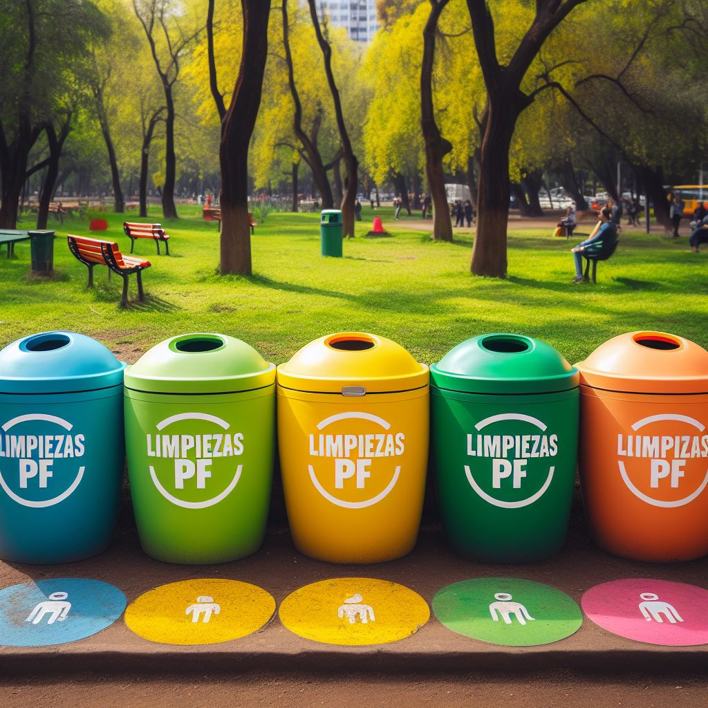

 El Contenedor para basura ofrece una capacidad de 189 litros y resiste 79 kg con dimensiones de 102 x 54 x 75 cm diseñado para facilitar el levantamiento de residuos en general y manejo de materiales está elaborado base de polietileno de alta densidad color verde que brinda resistencia a usos rudos. Incluye piezas para instalación, cuenta con ruedas que soportan un uso pesado y brinda una rápida movilidad, incluso a través de pasos o contención. Su tapa color negro articulada adjunta, se ajusta con firmeza y se balancea hacia atrás o hacia enfrente. Su fabricación proporciona durabilidad y alta calidad, otorgando plena satisfacción por mucho más tiempo de lo esperado. Cuenta con esquinas redondeadas y bordes lisos para una fácil limpieza.